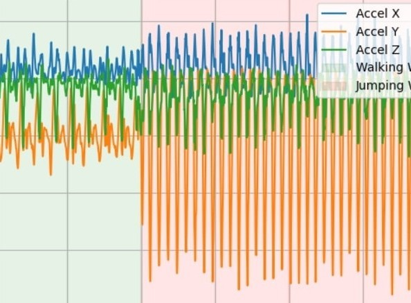

Running and Jumping Detection using Machine Learning

I developed a complete human activity recognition system that processes raw smartphone accelerometer data to distinguish between walking and jumping. Following a structured workflow encompassing data collection, hierarchical HDF5 storage, signal visualization, preprocessing, feature extraction and normalization, classifier training, and GUI deployment, we leveraged Python’s scientific stack (pandas, h5py, scipy, scikit-learn) to import CSV files from an accelerometer app, clean and smooth the time series with forward-fill and moving-average filters, extract a suite of 40 statistical features per 5-second window, train a logistic regression classifier to over 95% accuracy, and finally package the process into a Tkinter desktop application.

A function segments incoming CSV data into time-based windows and feeds them through the trained logistic-regression model and normalization scaler (loaded via joblib), allowing the classify_csv routine to generate real-time predictions on user data. On the GUI side, the user interface was built using Tkinter, with classification results visualized using matplotlib. Colour coded overlays indicate detected activity types alongside timestamped labels.